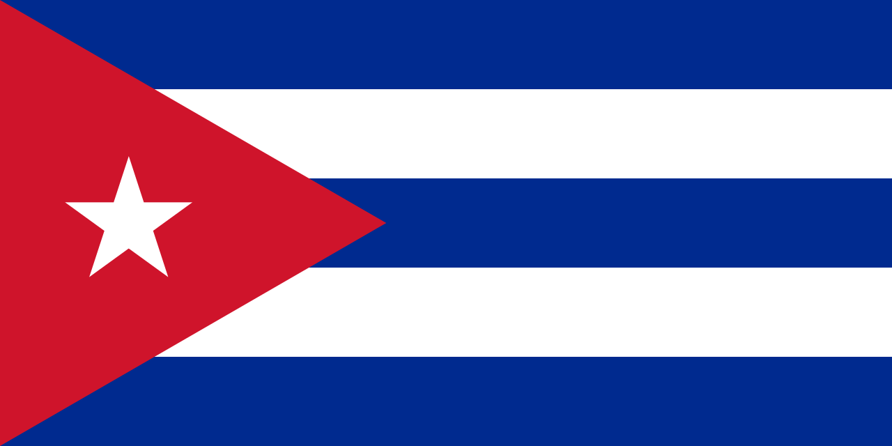
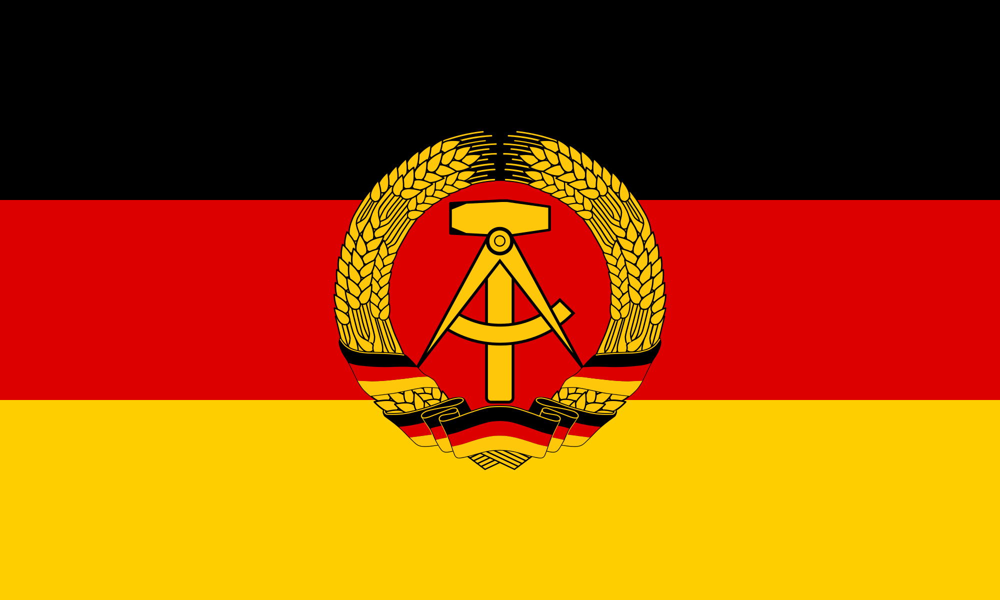
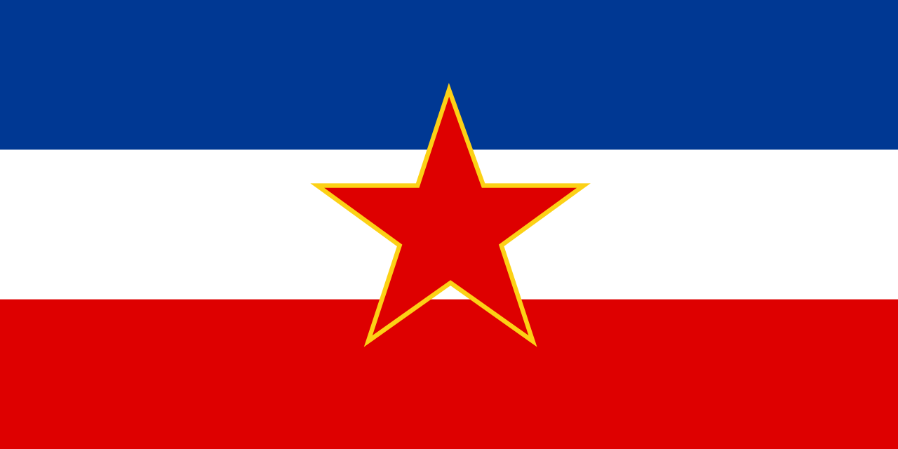

COUNTRIES THAT HAVE JOINED THE REVOLUTION
- UNION OF SOVIET SOCIALIST REPUBLICS (1922-1991)
- PEOPLE'S REPUBLIC OF CHINA (1949-PRESENT)

- DEMOCRATIC PEOPLE'S REPUBLIC OF KOREA (1950-PRESENT)

- REPUBLIC OF CUBA (1959-PRESENT)

- GERMAN DEMOCRATIC REPUBLIC (1948-1989)

- SOCIALIST FEDERAL REPUBLIC OF YUGOSLAVIA (1945-1992)
